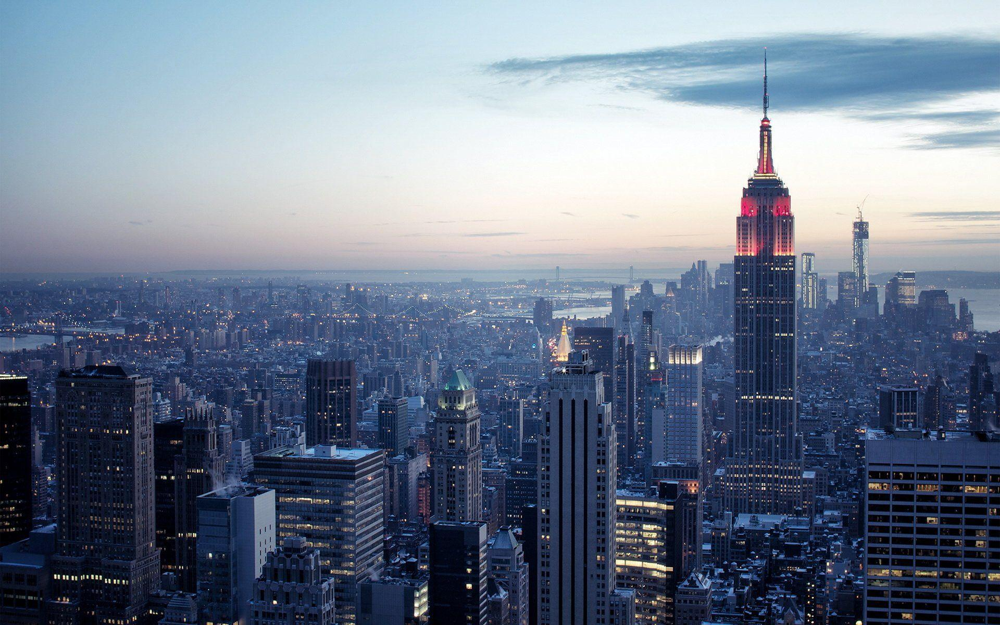

Statue of Liberty
Statue of Liberty, formally Liberty Enlightening the World, colossal statue on Liberty Island in the Upper
New York Bay, U.S., commemorating the friendship of the peoples of the United States and France. Standing 305
feet (93 metres) high including its pedestal, it represents a woman holding a torch in her raised right hand
and a tablet bearing the adoption date of the Declaration of Independence (July 4, 1776) in her left.
High Line
The High Line, elevated park and promenade built on an abandoned freight rail line on the West Side of Manhattan, New York, U.S. Its first section opened in 2009. With the completion of its final section in 2014, the High Line extended about 1.5 miles (2.4 km) from Gansevoort Street in the Meatpacking District (officially Gansevoort Market) in Greenwich Village west and north to West 34th Street, occupying 22 of the 41 blocks originally traversed by the railway. The park was inspired by Paris’s Promenade Plantée (1994) and buttressed by the National Trails System Act (1968, amended several times).

Central Park
Central Park, largest and most important public park in Manhattan, New York City.
It occupies an area of 840 acres (340 hectares) and extends between 59th and 110th streets (about 2.5 miles [4 km]) and between Fifth and Eighth avenues (about 0.5 miles [0.8 km]).
It was one of the first American parks to be developed using landscape architecture techniques.

Empire State Building
Empire State Building, steel-framed skyscraper rising 102 stories that was completed in New York
City in 1931 and was the tallest building in the world until 1971. The Empire State Building is located in Midtown Manhattan, on Fifth Avenue at 34th Street. It remains one of the most distinctive
and famous buildings in the United States and is one of the best examples of Modernist Art Deco design.
American Museum of Natural History
More details
9/11 Memorial and Museum
The 9/11 Memorial is a tribute of remembrance, honoring the 2,977 people killed in the terror
attacks of September 11, 2001 at the World Trade Center site, near Shanksville, Pennsylvania,
and at the Pentagon,
as well as the six people killed in the World Trade Center bombing on February 26, 1993.
The Metropolitan Museum of Art
More details
Time Square
Times Square, square in Midtown Manhattan, New York City, formed by the intersection of
Seventh Avenue, 42nd Street, and Broadway. Times Square is also the centre of the
Theatre District, which is bounded roughly by Sixth and Eighth avenues to the east and
west, respectively,
and by 40th and 53rd streets to the south and north, respectively.

Brooklyn Bridge
Brooklyn Bridge, suspension bridge spanning the East River from Brooklyn to Manhattan in New York City. A brilliant feat of 19th-century engineering, the Brooklyn Bridge was the first bridge to use steel for cable wire, and during its construction explosives were used inside a pneumatic caisson for the first time. Since its construction, the bridge has become an essential landmark of New York City—an outstanding architectural accomplishment that is still revered across the world. Accordingly, it has been designated a National Historic Landmark by the U.S. National Park Service.
{kind=link}
{kind=link}
{kind=link}
{kind=link}
{kind=link}
{kind=link}
{kind=link}